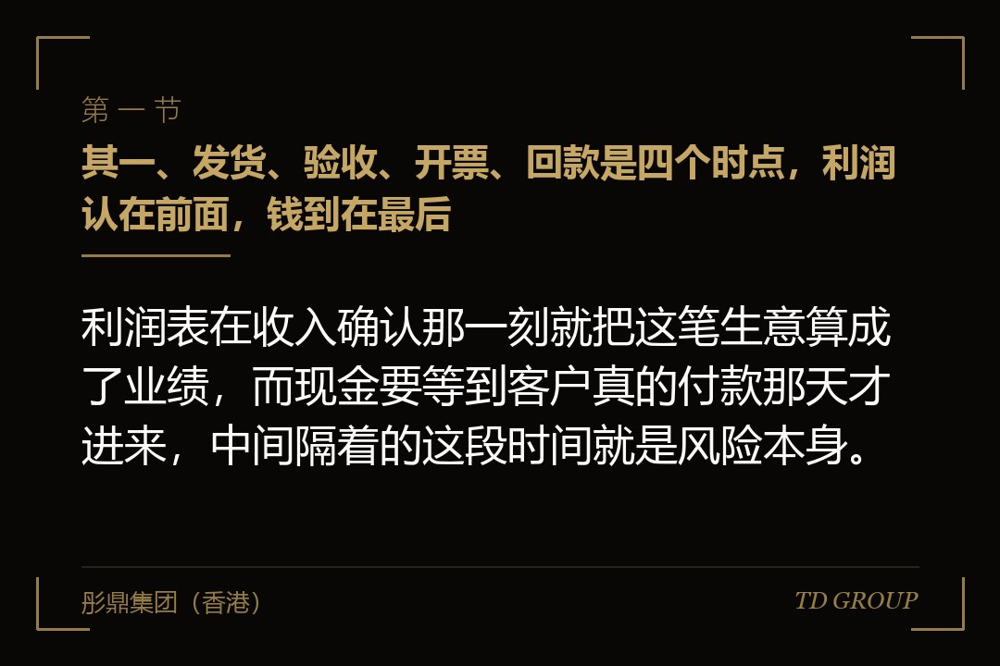
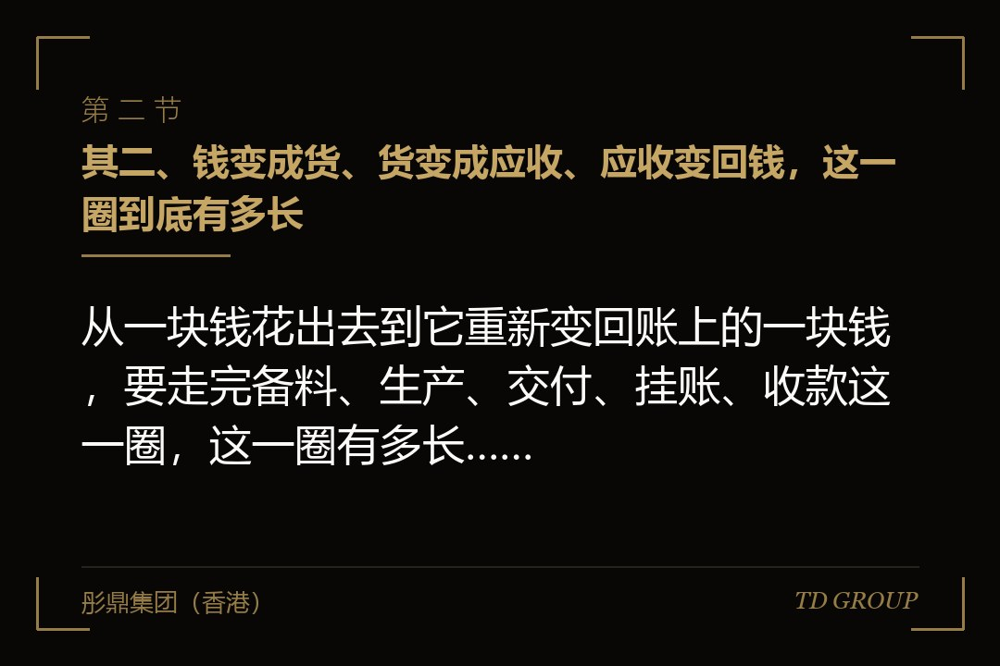
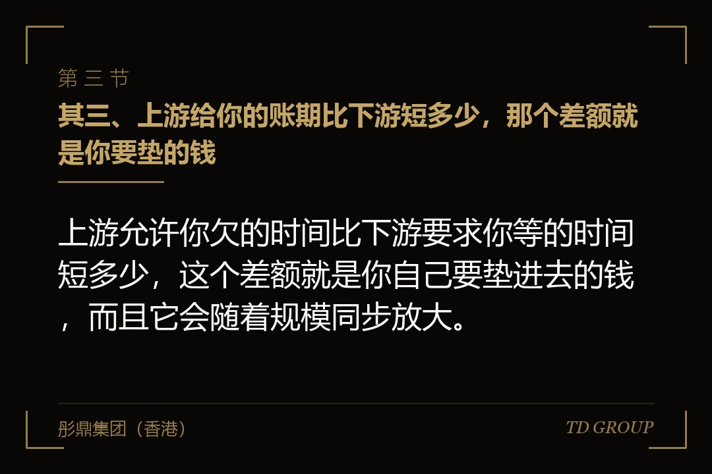

其一、发货、验收、开票、回款是四个时点，利润认在前面，钱到在最后

结论先行：利润表在收入确认那一刻就把这笔生意算成了业绩，而现金要等到客户真的付款那天才进来，中间隔着的这段时间就是风险本身。
一笔生意从做成到收到钱，中间至少有四个时点：货发出去、对方验收、开出发票、款项到账。会计上确认收入通常发生在靠前的位置，而现金流量表要等到最后一步才有反应。这不是谁做错了，这是两张表本来就在回答不同的问题。
这四个时点之间的距离，行业之间差得非常远。做零售的几乎是当场收钱，做工程的要等进度确认，做汽车零部件冲压的要等主机厂的对账周期，做医疗器械经销的还要等医院那一套结算流程走完。同样是一句"今年做了五千万"，在不同行业里意味着完全不同的现金状况。
所以账面赚钱、账户见底不是什么反常现象，它就是收入确认与现金到账之间那段时间差的必然产物。时间差越久、金额越大，这个缺口就越明显，而它跟这门生意本身赚不赚钱是两码事。
值得记住的是这么一句：利润表告诉你这门生意值不值得做，现金流量表告诉你这门生意你做不做得下去。两张表回答的是两个问题，而多数企业主只盯着前一张，直到发工资那天才想起来还有后一张。
其二、钱变成货、货变成应收、应收变回钱，这一圈到底有多长

结论先行：从一块钱花出去到它重新变回账上的一块钱，要走完备料、生产、交付、挂账、收款这一圈，这一圈有多长，决定了公司必须自己垫多少钱。
用大白话说，这一圈是三段：钱变成货，也就是采购和生产占用的时间；货变成应收，也就是从交付到确认挂账的时间；应收变回钱，也就是从挂账到款项到账的时间。三段加起来，再减去供应商愿意让你欠的那一段，剩下的天数就是要你自己出钱顶着的。
这个数最有用的地方在于，它把"我们回款慢"这种模糊感受变成了一个可以每个月盯着看的数字。它变长了，说明要么客户拖得更久，要么库存压得更重，要么你在给上游更早付钱——三种原因的处置办法完全不同，而只凭感觉是分不出来的。
多数公司从来没算过它，因为算它要把销售、仓库、财务三边的数据凑到一起，而这三边平时各说各话：销售报的是签了多少，仓库报的是发了多少，财务报的是开了多少发票。真的凑一次，通常会看到一个比自己想象长得多的数字。
其三、上游给你的账期比下游短多少，那个差额就是你要垫的钱

结论先行：上游允许你欠的时间比下游要求你等的时间短多少，这个差额就是你自己要垫进去的钱，而且它会随着规模同步放大。
用一个明示为假设的算法看得最清楚。假设一家公司每月出货一千万，给客户的账期是九十天，供应商给它的账期是三十天。那么任何一个时点上，都有约三千万挂在客户那里，而它只能占用供应商一千万，中间这两千万得自己顶着。
现在把生意做到两倍。月出货两千万，账期条件一个字没变，挂在外面的变成六千万，能占用上游的变成两千万，要自己垫的从两千万变成四千万。营业额涨了一倍，垫资也涨了一倍，而利润率一分没变——多出来的那两千万，得从利润积累、从借款、或者从老板自己口袋里出。
这就是那句听起来很反常的话的来源：生意越好，现金越紧。企业主感受到的是"我们今年增长了四成，怎么反而比去年更缺钱"，答案就在这道减法里，跟经营水平没关系。
由此还能推出另一条：越大的单子越危险。大客户往往同时要更长的账期、更高的质保金比例和更严的验收流程，而为了接下这一单，你还要先垫料、先招人、先扩产能。单子越大，先出去的钱越多，回来的时间越晚，中间这段路要你自己走完。
其四、账龄：挂了三个月的一百万，和挂了两年的一百万
结论先行：同样一百万应收，挂了三个月和挂了两年不是一样东西，账龄过了某个坎之后，能收回来的比例会明显往下掉。
账龄就是这笔钱在账上挂了多久。把应收按三十天、九十天、半年、一年、一年以上分档排出来，是一家公司能做的成本最低、见效最快的一件事，而多数公司连这张表都没有——它们只有一个应收总额，那个总额里三个月的和三年的混在一起。
时间之所以致命，是因为它同时侵蚀两样东西：证据和意愿。时间一长，当初经办的人离职了，验收单找不到了，对方的项目负责人换了三轮，你连"这笔钱是怎么来的"都要重新举证一次；与此同时，对方也从"忘了付"慢慢变成了"不打算付"。
有家做医疗器械经销的公司，自查时把应收按账龄排了一次，发现挂在一年以上的那一档，金额接近它全年的利润。它此前每年的报表都是盈利的，而那些利润有相当一部分从来没有变成过钱，只是从一张表挪到了另一张表上。
企业主在这一点上最常见的错误，是把两年前那笔还当成资产在算。它在报表上确实还是资产，但在经营判断上，它更接近一笔已经花掉的钱。分清这两者，比今年多接一个客户重要得多。
需要说明的是，账龄怎么分档、坏账怎么计提以及相关的税务处理，各地规则不同也会调整，以主管机关当时有效的规则为准。本节讲的是经营判断，不是会计处理。
其五、大客户既是账期的施加方，也是集中度风险本身
结论先行：客户集中和账期长，单独看各是一个问题，凑在一起就变成了另一种东西——对方一拖，你连谈判的余地都没有，因为你不敢得罪他。
集中度高意味着失去这个客户就伤筋动骨，而这恰恰是对方拉长账期时你不敢翻脸的原因。这两件事在很多公司里是同一个客户身上的两面，而管理层往往把它们当成两个独立的问题分开讨论。
于是形成一个循环：为了维持这个大客户，你接受更长的账期；账期越长，你垫进去的钱越多；垫得越多，你越离不开这个客户。等到有一天你想调整客户结构，会发现自己已经被绑在里面了，想走也走不动。
有家做食品包装印刷的公司，八成产能给了两家饮料厂。这两家把账期从六十天改到一百二十天的那次，公司内部讨论了一个下午，最后还是签了——理由是不签这两条线就空着，而空着的产线成本一天都不会少。签完之后，它需要长期垫进去的钱多了一倍。
这一节不是要谁去得罪大客户。是要认清一件事：你对大客户的依赖程度，直接决定了你在账期这件事上有多少议价空间。想改变账期，得先从改变依赖开始，而那是一件要用一两年慢慢做的事，不是一次谈判能解决的。
其六、真正加速恶化的，是企业主自己做的这几个动作
结论先行：让局面加速恶化的，往往不是客户拖款，而是企业主为了让报表好看、让年度目标达成而做出的几个动作。
排在前面的是为了冲营业额去接明知账期很长的单。这类单子在报表上立刻变成收入和利润，代价要到大半年以后才显形，而那时候年度目标已经完成、奖金已经发下去了。做决定的人和承担后果的时点，中间隔着一整个考核周期。
第二种是用应收去做自我安慰。"我们账上还有六千万应收"这句话，在会议室里听起来像是底气，可它的意思其实是"有六千万在别人手里，而且我不确定什么时候回来"。资产和现金在这句话里被悄悄画上了等号。
第三种是拿短期借款去垫长期账期。客户欠你一百二十天，你借三个月的钱去填，那么每一次到期都要重新找一次钱，而这条链上任何一个环节接不上，问题都会在一夜之间爆发出来。
这是期限错配，不是借钱本身的错。缺钱的时候该借钱还是该卖股权、过桥资金的条件怎么谈，另有专文，这里只强调一句：用短钱去垫长账期，成本按年折算下来通常比企业主以为的高得多。
最隐蔽的一种，是拿应收撑起来的营业额去谈估值。收入做得越大，估值锚定得越高，而外部机构进场头一件事就是看这些收入有没有变成钱。谈的时候有多好看，减的时候就有多难看。
还有一类，是现金紧的时候老板自己从公司拿一笔、或者通过关联方走一笔来周转。这几条路各自的边界与后果另有专文，本篇只提示一句：越是紧的时候人越容易走这条路，而这条路留下的痕迹将来一定会被翻出来。
其七、现在就能动手的五件事，全在合同和流程里
结论先行：收款这件事能改的地方几乎都在合同和流程里，大部分动作不用花钱，只需要在签字之前多花两个小时把条款谈清楚。
头一件是把付款绑在能客观判定的事件上。到货签收、调试完成、开票后固定天数——这些是你能拿出证据的节点。绑在"甲方内部审批通过""上级单位拨款以后"这种你看不见也管不着的动作上，等于把收款时点交到了对方手里。
第二件是预付款与分期比例。哪怕只拿到三成预付，也意味着这一单的备料钱不用你全垫；更重要的是，预付款本身是对方付款意愿的一次检验——连预付都不肯给的客户，后面那几笔多半也不好收。
第三件是账龄分级和催收节奏。按三十天一档定好规矩：谁在哪个时点发对账单、谁在哪个时点打电话、什么时候由老板出面、什么时候发正式函件。把它变成流程，销售就不必每一次都做一遍"要不要得罪客户"的心理斗争。
第四件是把销售提成挂在回款上，不挂在签单上。这一条改完，销售在谈账期时的立场会立刻反过来——在此之前，账期长短对他没有任何影响，签下来就算他的业绩，钱什么时候回来是财务的事。
第五件是留证据。合同、变更单、送货签收、对账单、往来邮件与函件，这些是将来做审计、谈融资或者真要走到诉讼那一步时能拿得出手的东西。它们在事情发生的当天几乎不费力，事后再补就是几个月的工夫。
其八、你的应收账款，是外部尽调最早翻开的东西之一
结论先行：应收账款的质量是外部尽调最早翻开的东西之一，收款没理顺，影响的不只是今年难过，还有这家公司在资本市场上值多少钱。
审计看这件事的方式很朴素：合同、发票、签收、回款四样要能对得上，而且要能一笔一笔对得上。四样里缺一样，那笔收入就要被打上问号；对不上的金额大到一定程度，整个报告期的收入都会被重新审视一遍。
这条判据和账外收入那件事是同一个道理——没有完整凭证链的钱，在外部机构眼里等于不存在。审计怎么做、上市之前的财务规范怎么补，这两条线各自另有专文，本篇只讲它们的起点：起点就在你每一次交货有没有把签收单收回来。
投资人这一侧更直接。看到长账龄的应收，通常的做法是先把它从估值里减掉，再看剩下的部分值多少。一家营业额一亿、应收里有三成挂了一年以上的公司，和一家营业额七千万、回款干净的公司，在投资人眼里往往是后者更值钱。
有位企业主在华尔街彤鼎俱乐部的一次交流里说过一句话：他做了十几年生意，一直以为融资靠的是把故事讲好，直到尽调把他三年的应收明细一笔笔铺开，他才明白别人真正在看的是什么。
至于账上还能撑几个月、什么时候该开口去谈这一轮，那是另一条线上的判断，另有专文。本篇讲的自始至终是钱为什么收不回来、以及怎么把它收回来，这是经营侧的事，发生在坐上谈判桌之前很久。
所以收款这件事的两头是通的。往前一步，是这个月发不发得出工资；往后一步，是三年以后有没有人愿意按你想要的价格投进来。中间那段路，是从今天起每一份合同怎么签、每一笔账怎么记，一天一天攒出来的。
那些在现金上真吃过一次亏的企业主，后来在俱乐部里说的往往是同一句：早知道就把付款条款多谈两个小时，那两个小时比后面追三年都管用。